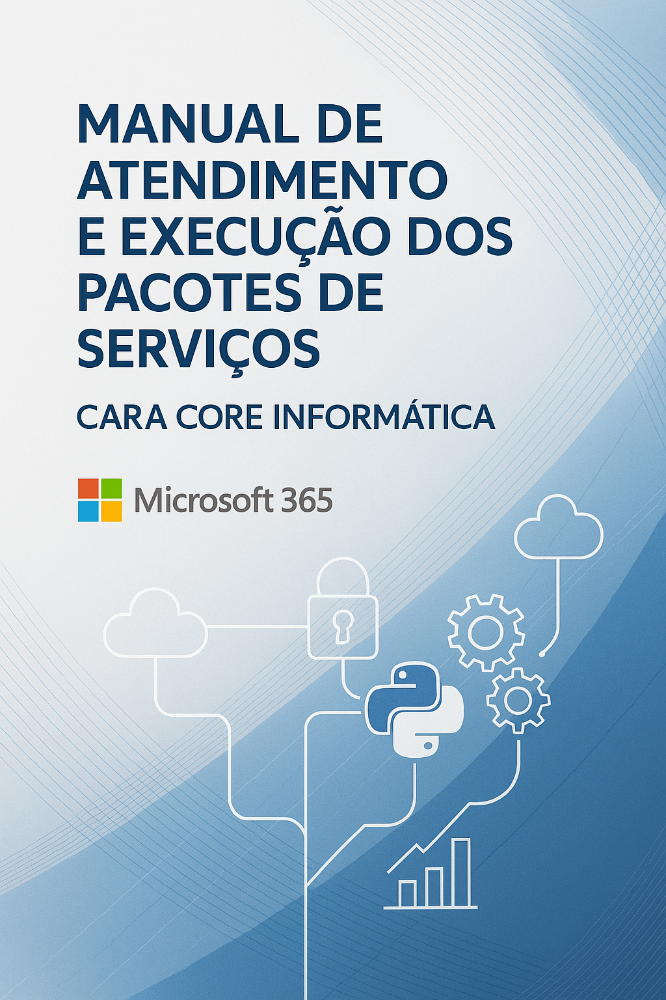
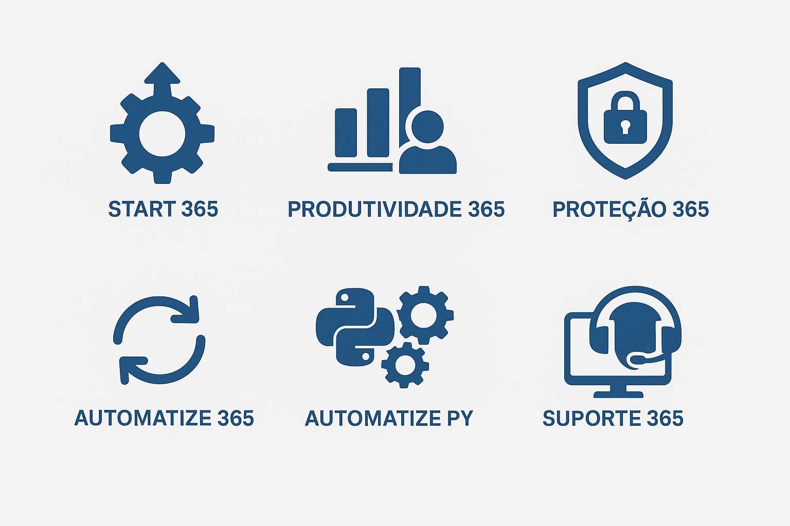

Este Guia de Serviços 2026 apresenta como a Cara Core Informática entrega resultado com tecnologia: redução de custos recorrentes, proteção fiscal, produtividade digital e continuidade de negócio. Em vez de falar de “ferramentas”, falamos de ROI, risco e velocidade de execução — com entregáveis claros e acompanhamento prático.
O portfólio 2026 foi desenhado para dois cenários reais: (1) empresas que precisam produzir mais com a equipe atual e (2) varejistas que precisam vender com segurança, preparados para a Reforma Tributária.
A Reforma Tributária acelera mudanças no varejo e aumenta o risco de inconsistência fiscal entre venda, tributação e documento fiscal. Em 2026, o diferencial competitivo é vender com segurança — com tecnologia que acompanha regras, reduz erro humano e cria trilha de controle para auditoria.
A Cara Core atua com uma camada de automação fiscal que organiza a operação para o IVA Dual (IBS/CBS): parametrização, validações e rotinas que diminuem retrabalho e protegem o lojista em momentos de transição normativa.
Importante: esta entrega não substitui a contabilidade. Nosso papel é reduzir atrito operacional e risco de erro por meio de processo e automação, alinhados à estratégia fiscal do cliente.
Em 2026, produtividade não é “treinar ferramenta”: é tirar tempo do operacional e devolver para o time vender, atender e decidir melhor. A Aceleração de Produtividade Digital reúne Microsoft 365 e automação sob medida em um modelo orientado a resultados.

Para empresas que precisam colocar a operação digital “de pé” com segurança e rapidez. O objetivo é acelerar a adoção do Microsoft 365 sem interrupções — reduzindo risco de implantação e evitando semanas de tentativa e erro.
Em 2026, nossas entregas trazem componentes que aceleram adoção e reduzem risco, com ênfase em retorno mensurável:
Próximo passo: agende um diagnóstico de impacto por ROI e um plano de entregas em 30 dias. Contato: suporte@caracore.com.br.
Para empresas que já pagam licenças, mas ainda não capturam valor. Entramos para transformar uso em produtividade mensurável: menos “vai e volta” no atendimento, menos busca de arquivos, menos ruído de comunicação e decisões mais rápidas.
Proteção aqui é linguagem de negócio: reduzir risco financeiro, reputacional e operacional. O objetivo é criar controles que diminuem a probabilidade e o impacto de incidentes, mantendo a empresa em conformidade (ex.: LGPD) com governança prática.
Automação não é “fazer robô”: é reduzir custo por transação e aumentar previsibilidade. Este pacote transforma processos repetitivos em rotinas padronizadas, com visibilidade e controle.
Quando o ganho está em integrar sistemas, limpar dados, consolidar informações e eliminar tarefas repetitivas fora do “padrão de mercado”, este pacote entrega automações sob medida com foco em impacto e sustentação.
Governança é o que impede que a operação digital “desorganize” com o tempo. Aqui, criamos um modelo simples de padrão, dono e rotina de revisão — para que a empresa cresça sem perder controle.
O que antes era “suporte” agora é continuidade: responder rápido, reduzir tempo de parada e manter o ambiente previsível. O foco é garantir que o digital não vire gargalo e que incidentes não virarem prejuízo.
| Pacote | Descrição Resumida | Investimento |
|---|---|---|
| Blindagem Fiscal | Preparação IVA Dual (IBS/CBS) com automação e rastreabilidade | Sob consulta |
| Fundação 365 | Implantação rápida e segura para começar bem | Sob consulta |
| Eficiência 365 | Adoção e produtividade mensurável (menos atrito e retrabalho) | Sob consulta |
| Proteção 365 | Redução de risco, controles e conformidade | Sob consulta |
| Operação 365 | Automação e governança de fluxos para previsibilidade | Sob consulta |
| Automação sob medida | Integrações e rotinas de alto impacto com Python | Sob consulta |
| Continuidade | Continuidade de Negócio em Tempo Real (suporte e gestão) | Sob consulta |
O Guia de Serviços 2026 reposiciona tecnologia como estratégia: menos custo recorrente, mais produtividade, proteção fiscal e continuidade de negócio. Nossas entregas são desenhadas para gerar retorno rápido e sustentação, com clareza de prioridades e evolução contínua.
Seja na proteção fiscal (Blindagem Fiscal) ou na produtividade corporativa (Microsoft 365 + automação sob medida), a Cara Core opera com um princípio simples: resultado primeiro — com implementação responsável, mensuração e melhoria contínua.
As soluções foram desenhadas para serem complementares e orientadas a um “caminho de maturidade”: começar pelo que dá retorno rápido e evoluir com governança.
Links úteis:
Links oficiais e bases de conhecimento para Microsoft 365 e boas práticas
de produtividade, governança e segurança — com foco em adoção e
padronização.
Ferramentas recomendadas:
Relação de soluções e práticas recomendadas para administração, automação,
backup e monitoramento, priorizadas por impacto no risco e na
continuidade do negócio.
Referências técnicas da Microsoft:
Guias, whitepapers, artigos e melhores práticas publicados pela
Microsoft para implantação, segurança, automação, integração e
governança do Microsoft 365.
Modelos e templates:
Arquivos editáveis (checklists, termos de aceite, políticas internas,
roteiros de adoção, templates de relatório executivo e diagnóstico por
ROI/risco), para adaptação conforme o cenário do cliente.
Para mais informações sobre as soluções ou para solicitar uma consultoria personalizada, entre em contato conosco:
Nossa equipe está à disposição para ajudar sua empresa a capturar resultado com tecnologia — produtividade digital e Blindagem Fiscal 2026.
| Versão | Data | Descrição das Alterações |
|---|---|---|
| 1.0 | 21/06/2025 | Criação inicial do manual |
| 1.1 | 22/06/2025 | Ajuste de âncoras e melhorias no sumário |
| 1.2 | 01/07/2025 | Inclusão de novos pacotes e anexos |
| 2.0 | 31/01/2026 | Atualização 2026: foco em ROI, Blindagem Fiscal e Produtividade Digital |
| 2.1 | 31/07/2026 | Revisão semestral: atualização de mensagens e ofertas |
| 2.2 | 31/01/2027 | Revisão semestral: ajustes conforme cenário fiscal e varejo |
| 2.3 | 31/07/2027 | Revisão semestral: atualização de pacotes e tabela-resumo |
Este documento é um guia vivo e será atualizado conforme novas práticas, pacotes e tecnologias forem incorporados aos serviços da Cara Core Informática. Recomendamos que os usuários revisem periodicamente o manual para se manterem informados sobre as últimas novidades e melhores práticas.
Politica institucional: todo este material e marca registrada da Cara Core Informatica. E proibida reproducao ou reaproveitamento comercial por terceiros sem autorizacao formal. O conteudo e institucional e nao expoe pessoas da empresa, fundadores ou executivos.